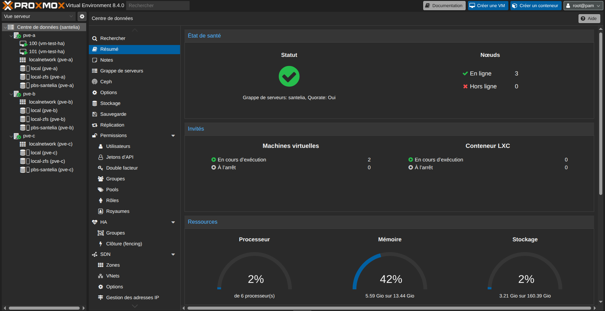
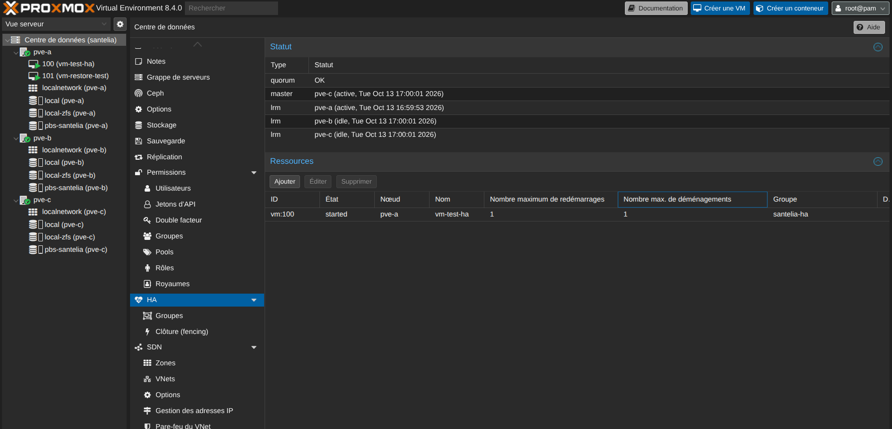
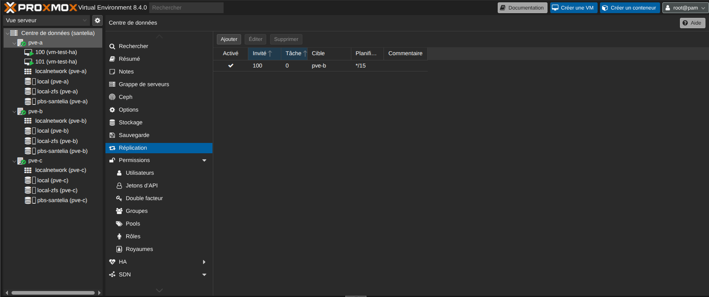
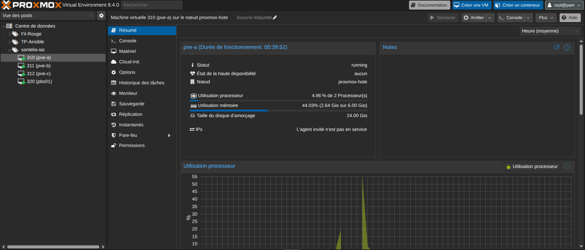

Ce que démontre la brique
- Un cluster de trois nœuds : la perte d'un nœud laisse le service opérationnel, sans QDevice ni stockage partagé.
- La réplication des volumes entre nœuds, sur un pool nommé de manière identique pour que la reprise soit possible ailleurs.
- Un groupe de haute disponibilité avec priorités de nœuds, pour que la reprise ait lieu au bon endroit.
- Une bascule provoquée et chronométrée, avec relevé de l'état du quorum pendant l'incident.
- Des écarts assumés et écrits : sans eux, la recette ne résiste pas à une question un peu précise.
La brique en images




Limite de la maquette
Les trois nœuds sont hébergés sur une seule machine physique. La maquette démontre donc le mécanisme de quorum, de réplication et de bascule, mais pas la résistance à la panne de l'hôte lui-même. Cet écart est déclaré explicitement dans le document d'architecture, parce qu'une recette doit rester défendable.